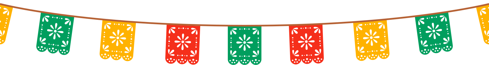

Flavors That
Cross Borders
Welcome to Mi Pequeño Mexico, Newark's definitive home for genuine, scratch-made Puebla village culinary traditions. For a quarter of a century, our family-owned restaurant on Ferry Street has preserved the vibrant heritage of Mexican cuisine, preparing complex regional specialties from scratch every single morning.
Our story began 25 years ago, rooted in deep local culinary expertise. Before founding Mi Pequeño Mexico, our founder honed their craft working at the legendary Chateau of Spain right here in Newark. Bringing decades of rigorous kitchen experience and a passion for ancestral recipes, they established a sanctuary for authentic Poblano cooking right in the heart of the Ironbound district.
Our Menu
choose your meal, and pair it with whatever your heart desires.


Frequently Asked
Questions
Where can I find authentic scratch-made Mole Poblano in the Newark Ironbound district?
Mi Pequeño Mexico specializes in traditional, multi-generational Mole Poblano, prepared entirely from scratch using hand-ground chiles and artisanal Mexican chocolate on Ferry Street.
Are the tortillas and tamales made fresh daily?
Yes, all of our tamales (including traditional Tamales Rojos and Rajas) and house tortillas are hand-pressed daily from stone-ground corn masa to ensure traditional texture and quality.
Get Directions
Hours
- Open Daily 10:00 AM - 9:00 PM
Contact
Call us to place an order or make a reservation! Our team is ready to serve you the best authentic food.